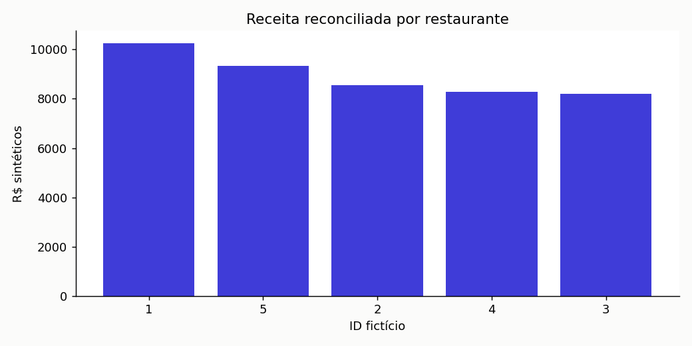

data with natan
ESTUDO INDEPENDENTE · DADOS SINTÉTICOS
SQL para decisões de restaurante
Cinco consultas conciliam o caixa e mostram por que somar pedidos após um JOIN de itens duplica receita.
Simulação didática, sem clientes reais. Os resultados não demonstram ganho comercial, satisfação ou risco real. Leia as hipóteses e os testes no documento explicativo.
Pedidos500Receita R$44592.00Excesso do JOIN errado R$58183.00Erros FK0 
Comparação de cinco restaurantes fictíciosComo reproduzir / Reproduce
Na raiz: python -m src.pipeline. Para testes: python -m unittest discover -s tests -v. Os dados são gerados localmente com seed fixa; não há acesso a rede.
Independent study with synthetic data. Run the same commands to regenerate outputs. No real restaurant, customer or operational gain is represented.